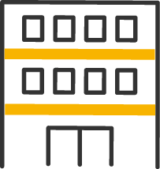
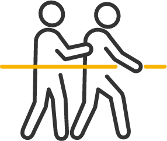

働く人を幸せに、
その幸せを伝播させていく。
私がつくりたかったのは、
頑張った人が報われるチームです。
サンズ訪問介護ステーション
代表 安田 欣司
私たちが実現したい看護の形
features
-

サービスは、
もっと自由でいい。私たちは、固定観念にとらわれません。利用者様のQOL（生活の質）を高められるなら、どんなアイデアでも歓迎です。マニュアル通りではなく、その人らしさを大切にした柔軟なケアを。あなたの創造力が、きっと利用者様の人生を豊かにします。
-
『ライフワークマネジメント』を
目指して。実労働時間7.5時間、効率の良い仕事をスケジュールできるようチームで動きます。より良いワークスタイルへ常に変化していけるように、コミュニケーションできる環境づくりを心掛けます。また新しいことへの挑戦やプライベートの充実も大切にしてほしいと考えています。
-

利用者様の自発性を
引き出す。暖かく寄り添い、利用者様がこれまで消極的だったことにも「やってみようかな」と自然と前を向けるように、自主的なやる気を引き出していけるように支援していきたいと考えています。
動き続けよう。変わり続けよう。
私たちのステーションは、これから開設するところです。
真っ白なキャンバスのような環境に、もしかしたら不安もあるかもしれません。
ですが、ここにどんな色を塗るか、どんな絵を描くか、それはあなたと一緒に決めていきたいのです。
「こんなケアがしたい」「こんなチームで働きたい」。
そんなあなたの想いを、ぜひ聞かせてください。
私たちはともに動き続け、変わり続けるステーションでありたいと考えています。
サンズ訪問介護ステーションについて
- 開設日
- 2024年9月1日(予定)
- 所在地
- 千葉県習志野市鷺沼1-8-38 テラス根本5号室
（京成線「京成津田沼」駅より徒歩14分） - 運営会社
- 株式会社キープ・オン・ムーブ
- 代表者
- 安田 欣司
採用情報
recruit
「サンズ訪問看護ステーション」という名前の由来は、太陽に因んでつけました。
当社と関わる利用者様、一緒に働くスタッフ、一人ひとりが輝いて欲しいという想いがあります。
また、『北風と太陽』の例えのように、利用者様、スタッフが自ら行動できるような働きかけをする
関係性の構築、主体的に問題解決に取り組むことを大切にしています。
より良い環境になるよう日々のコミュニケーションを心掛け、制度や待遇にも反映させていきたいと考えています。
ワークライフマネジメント、効率よい仕事を目指し、実質7.5時間労働としています。
選考プロセス
- 書類選考
履歴書
職務経歴書
資格証 - 面接(1~2回)
- 内定
- 入社前
相談 - 入社
看護師兼管理者
- ポジション
- 【千葉県習志野市】訪問看護事業所の看護師兼管理者
- 応募資格
-
＜必須資格＞
看護師免許
＜歓迎要件＞
- ・笑顔が素敵な方
- ・一緒に立ち上げを楽しんでチャレンジしたい方
- サービス内容
- 訪問看護事業所 ＜対象者＞成人・高齢、身体障害・精神障害
- 仕事内容
-
訪問看護事業所での看護師をお願いいたします。
■看護師業務
- ・全身の状態観察
- ・日常生活動作における支援
- ・身体の清拭援助
- ・主治医やケアマネなどの多職種連携調整
■管理者業務
- ・スタッフ育成とマネジメント
- ・訪問スケジュールの調整
- ・営業活動
- ・他事業所との連携
- 利用者様が、訪問を楽しみにしてくださるような関りや寄り添った支援を期待してます。
- 契約期間
- 無期雇用
- 雇用形態
- 正社員
- 試用期間の有無
- 有
- 試用期間(詳細)
- 3か月（給与に関しては減額なし）
- 給与
-
経験・能力に合わせて要相談
月給380,000円～（給与詳細）
- ・基本給 300,000円～
- ※固定残業代20時間分42,857円含む ※超過分は別途支給
- ・管理者手当 50,000円
- ・資格手当 30,000円
（その他）
- ・平日オンコール 4,000円/1日
- ・休日オンコール 7,000円/1日
- ・緊急訪問手当 6,000円/1件
- ・エンゼルケア 8,000円/1件
- ・賞与無し（2年目より売上に応じて）
- ・交通費全額支給
- 想定年収
- 500万円～（オンコール手当を含む）
- 勤務時間
- 固定時間制8:30～17:00（実働7.5時間/休憩60分）
※時間外労働の有無:有
※平均残業時間:0時間～10時間 - 休日休暇
- 土日祝日休
年間休日:125日（夏季休暇、年末年始休暇含む）
夏季休暇:3日、年末年始:6日 - 待遇•福利厚生
-
- ・社会保険完備(健康保険､厚生年金保険､雇用保険､労災保険)
- ・交通費全額支給
- ・就業場所における受動喫煙防止措置の状況：敷地内全面禁煙
看護師
- ポジション
- 【千葉県習志野市】訪問看護事業所の看護師
- 応募資格
-
＜必須資格＞
看護師免許
＜歓迎要件＞
- ・笑顔が素敵な方
- ・一緒に立ち上げを楽しんでチャレンジしたい方
- サービス内容
- 訪問看護事業所 ＜対象者＞成人・高齢、身体障害・精神障害
- 仕事内容
-
訪問看護事業所での看護師をお願いいたします。
■看護師業務
- ・全身の状態観察
- ・日常生活動作における支援
- ・身体の清拭援助
- ・主治医やケアマネなどの多職種連携調整
- 利用者様が、訪問を楽しみにしてくださるような関りや寄り添った支援を期待してます。
- 契約期間
- 無期雇用
- 雇用形態
- 正社員
- 試用期間の有無
- 有
- 試用期間(詳細)
- 3か月（給与に関しては減額なし）
- 給与
-
経験・能力に合わせて要相談
月給300,000円～（給与詳細）
- ・基本給 270,000円～
- ※固定残業代20時間38,571分円含む ※超過分は別途支給
- ・資格手当 30,000円
（その他）
- ・平日オンコール 4,000円/1日
- ・休日オンコール 7,000円/1日
- ・緊急訪問手当 6,000円/1件
- ・エンゼルケア 8,000円/1件
- ・賞与無し（2年目より売上に応じて）
- ・交通費全額支給
- 想定年収
- 360万円～（オンコール手当を含む）
- 勤務時間
-
固定時間制8:30～17:00（実働7.5時間/休憩60分）
※時間外労働の有無:有
※平均残業時間:0時間～10時間 - 休日休暇
-
土日祝日休
年間休日:125日（夏季休暇、年末年始休暇含む）
夏季休暇:3日、年末年始:6日 - 待遇•福利厚生
-
- ・社会保険完備(健康保険､厚生年金保険､雇用保険､労災保険)
- ・交通費全額支給
- ・就業場所における受動喫煙防止措置の状況：敷地内全面禁煙
お問い合わせ
contact
もしご興味をお持ちいただけたら、ぜひ一度サンズについてお話しさせてください。